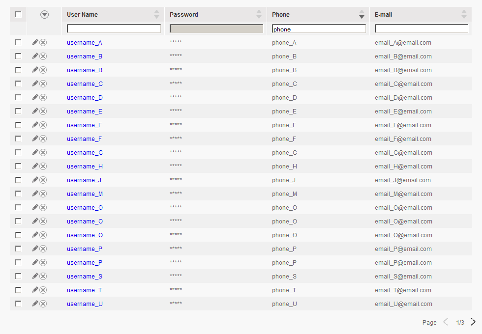

Do you like the following table with Ericsson look and feel (old), with feature sort, filter, paging ?
Can you believe you can have such table within 30 minutes with several lines of java code ?
so, we assume you are in a Java dynamic web project which was based on Struts, and you are going to implement the above list
- generic-table.jar - resources/common/uniform_table_list.jsp + resources/css/* + resources/images/* + resources/js/* + lib/* (the 3pp lib dependences)
You can check the example com.ericsson.dcp.generic.table.example.UserListAction from the source code
public class ExampleAction extends UniformTableAction {
@Override
protected int getTotalCount(UniformTableForm form, HttpServletRequest request) throws Exception {
// TODO Auto-generated method stub
return 0;
}
@Override
protected List<TableCell> getTableHeader() {
// TODO Auto-generated method stub
return null;
}
@Override
protected List<IMappingProcessor> getTableMappingProcessorList(UniformTableForm form, HttpServletRequest request) {
// TODO Auto-generated method stub
return null;
}
@Override
protected List<? extends Object> getResultList(UniformTableForm form, HttpServletRequest request, int pageNumber)
throws Exception {
// TODO Auto-generated method stub
return null;
}
<head> <link href="css/common.css" rel="stylesheet" type="text/css"></link> <link href="css/pandora.css" rel="stylesheet" type="text/css"></link> <script type="text/javascript" src="js/jquery-1.7.2.min.js"></script> <head> ... ... <jsp:include page="common/uniform_table_list.jsp"></jsp:include>
<form-beans> <form-bean name="uniformTableForm" type="com.ericsson.dcp.generic.table.action.UniformTableForm"></form-bean> </form-beans> <action-mappings> <action path="/ExampleAction" name="uniformTableForm" scope="request" type="com.ericsson.***.ExampleAction" parameter="method"> <forward name="list" path="/example_list.jsp"></forward> </action> </action-mappings>